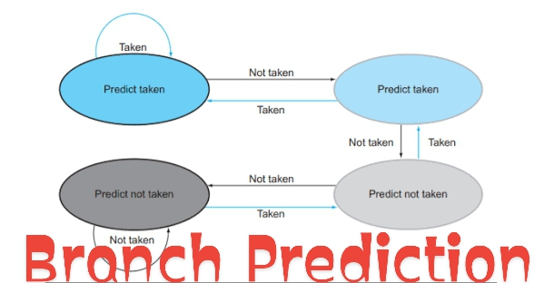

Branch Prediction in modern CPUs
November 24, 2026

How the CPU executes instructions
The CPU basically uses something called a program counter which is technically just a pointer to a memory address. The program counter points to exactly one instruction which is the one being executed at the time and moves to the next instruction/memory after to execute the next instruction except there's a jump/branch that makes it switch to a different place in memory.
There is usually one Program Counter per CPU core.
So the CPU looks at the program counter to get the memory address its currently pointing to, then it goes to that memory address and copies the instructions in it to the CPU so it can be executed.
(Program Counter) -> Memory Address -> Instruction
-------------------- Memory Address -> Instruction
-------------------- Memory Address -> Instruction
The execution of instructions will not always be sequential, it can jump from between multiple sections of the program/instructions due to conditions, loops or function call instructions.
Every program runs as a process, and each process has it's own Program Counter. The current running program counter depends on the programs running state. If the program is in the RUNNING state, the CPU will execute it's program counter otherwise, it will execute another program's whose state is currently RUNNING.
This is not the case tho with modern CPUs which have multiple cores. A single CPU core handles the execution of a single Program counter, therefore with multiple cores running in parallel the CPU will be able to load multiple program counters and execute them simultaneously.
Program states include:
- Running: Currently being executed by the CPU.
- Ready: Ready and waiting for the CPU to begin execution.
- Sleep: Paused or waiting for user input or a timer.
When the Operating system switches state say from RUNNING to SLEEPING, it saves the position of the Program counter so when it comes back to the RUNNING state it knows where to continue execution from.
The Sequential Execution Model and Branch Instructions
The CPU normally follow instructions sequentially(Pipelined) That is, it executes an instruction at a memory location and goes to the memory location directly after to execute the next instruction. Instructions that might change the control flow of a program (the path the program takes the code through) are known as Branches or Jumps. That is, a branch is an instruction that causes the program counter to deviate from it's regular sequential execution of instructions (from it's current location to a new location specified by the destination instruction/target instruction of the branch).
Branches usually have a target, that is an instruction to execute if a condition is met. When a branch retargets a CPU, it is said to be taken.
Conditional vs Unconditional Branches
An unconditional branch is one that always results in a branch/jump, while conditional branches only result in a jump if a condition is met otherwise they fall through/execute the next the next sequential instruction.
Whether compiler optimizations are turned on or off makes a big difference in the number of branches the compiler emits into your program.
Direct versus Indirect Branches
Direct branches explicitly encode the target address for the branch within the branch itself. That is, the branch holds within its instruction the target instruction or address at compile time. In contrast, indirect branches point to a register or memory location that holds the target address only making the target address known/resolved at runtime.
Branch Prediction
While trying to execute instructions as fast as possible, the CPU tries to fetch the next instruction while the current one is being executed (Fetching instructions has a time cost).
This works perfectly in most cases except when branches are involved.
That's where branch prediction comes in, where the CPU tries to predict whether a branch will be taken or not.
If the CPU predicts correctly, it's a great job and the speedup is successful but if it predicts wrongly all the work(preloaded instructions) has to be thrown out and the correct instruction loaded leading to delayed execution.
In modern microprocessors the delay due to branch misprediction is between 10 to 20 clock cycles because the delay is equal to the number of stages in the pipeline from the fetch stage to the execute stage.
CPU pipeline execution stages
Waiting instructions: IIII
Stage 1: Fetch I
Stage 2: Decode I
Stage 3: Execute I
Stage 4: Write back I
Branch prediction works because branches tend to be predictable. For example the CPU can predict that a loop programmed to loop 100 times will run for at least 99 (based on its condition). Branch predictors have been able to achieve 90-95% accuracy depending o the workload being ran.
Improving Branching Related Performance Issues
1. Reduce the complexity of if statements and loop conditions.
2. Use inline for functions that can be inlined.
3. Avoid function calls with extreme depths.
4. Avoid code patterns that generate indirect branches.
5. Write code that can make use of conditional move or conditional select instructions.